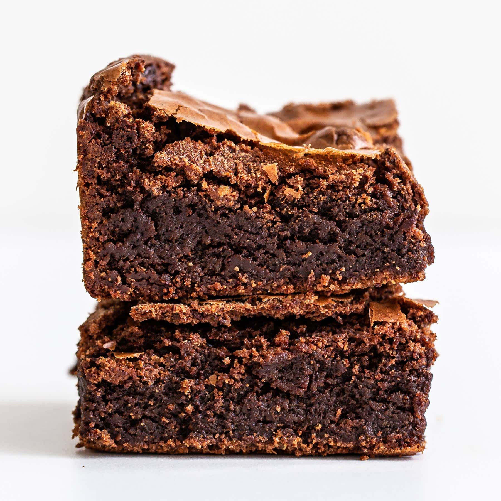

Brownies

Description:
Here is a recipe for some gooey brownies that
always come out looking very nice, have some
nice saltiness to them and overall are very tasty.
Ingredients:
- 62 grams all-purpose flour
- 50 grams cocoa powder
- 1 1/2 Diamond Crystal salt, or 3/4 Morton kosher salt
- 1 stick butter
- 113 grams chocolate
- 250 grams granulated sugar
- 3 large eggs
- 1 tbsp vanilla extract
- 113 grams chocolate chips
Steps:
- Grease a 8 inch baking tray, line with greased parchment paper
- whisk flour, cocoa powder, and salt until combined
- combine butter and chocolate in a medium bowl,
set over a sauce pan of barely simmering water,
heat until chocolate is melted and smooth
- whisk in sugar, then add 3 eggs one at a time, whisking vigorously
- whisk in vanilla extract, then whisk in dry ingredients, stir in chocolate chips
- bake until set across top and tester comes with a few moist crumbs attached, 27-30 minutes
- Let cool for 30 minutes, or overnight, cut into pieces, enjoy.